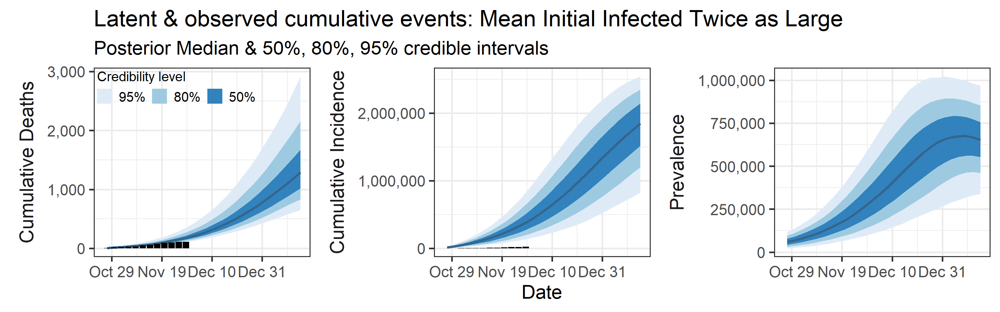
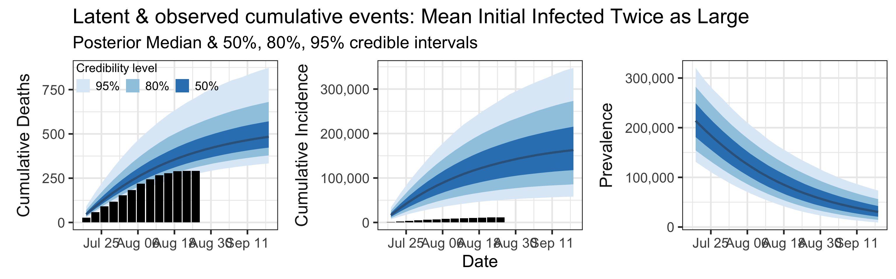
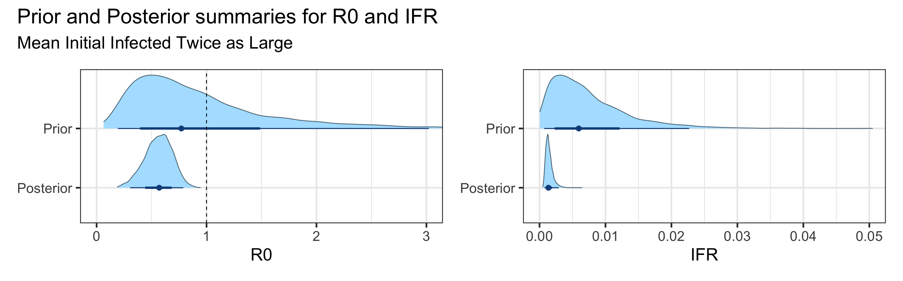

Orange County, CA COVID Situation Report
=======Orange County, CA COVID-19 Situation Report `r str_c(format(model_objects\(actual_first_day, '%b %d'), '-', format(model_objects\)actual_last_day, ‘%b %d’), sep = ’ ’)
>>>>>>> 416b006edda81a9d0db508602faa74b0fff6a8b8
Last updated: 2020-09-03
Checks: 6 1
Knit directory: uci_covid_modeling/
This reproducible R Markdown analysis was created with workflowr (version 1.6.2). The Checks tab describes the reproducibility checks that were applied when the results were created. The Past versions tab lists the development history.
The R Markdown file has unstaged changes. To know which version of the R Markdown file created these results, you’ll want to first commit it to the Git repo. If you’re still working on the analysis, you can ignore this warning. When you’re finished, you can run wflow_publish to commit the R Markdown file and build the HTML.
Great job! The global environment was empty. Objects defined in the global environment can affect the analysis in your R Markdown file in unknown ways. For reproduciblity it’s best to always run the code in an empty environment.
The command set.seed(20200727) was run prior to running the code in the R Markdown file. Setting a seed ensures that any results that rely on randomness, e.g. subsampling or permutations, are reproducible.
Great job! Recording the operating system, R version, and package versions is critical for reproducibility.
Nice! There were no cached chunks for this analysis, so you can be confident that you successfully produced the results during this run.
Great job! Using relative paths to the files within your workflowr project makes it easier to run your code on other machines.
Great! You are using Git for version control. Tracking code development and connecting the code version to the results is critical for reproducibility.
The results in this page were generated with repository version e7bdeeb. See the Past versions tab to see a history of the changes made to the R Markdown and HTML files.
Note that you need to be careful to ensure that all relevant files for the analysis have been committed to Git prior to generating the results (you can use wflow_publish or wflow_git_commit). workflowr only checks the R Markdown file, but you know if there are other scripts or data files that it depends on. Below is the status of the Git repository when the results were generated:
Ignored files:
Ignored: .Rhistory
Ignored: .Rproj.user/
<<<<<<< HEAD
Unstaged changes:
Modified: analysis/index.Rmd
Modified: analysis/jun20_jul25.Rmd
=======
Ignored: analysis/figure/
Ignored: code/.DS_Store
Unstaged changes:
Modified: analysis/index.Rmd
Modified: code/SEIeIpRD/plot_functions.R
>>>>>>> 416b006edda81a9d0db508602faa74b0fff6a8b8
Note that any generated files, e.g. HTML, png, CSS, etc., are not included in this status report because it is ok for generated content to have uncommitted changes.
These are the previous versions of the repository in which changes were made to the R Markdown (analysis/index.Rmd) and HTML (docs/index.html) files. If you’ve configured a remote Git repository (see ?wflow_git_remote), click on the hyperlinks in the table below to view the files as they were in that past version.
| File | Version | Author | Date | Message |
|---|---|---|---|---|
| Rmd | e7bdeeb | igoldsteinh | 2020-09-02 | new report Jul 18 - Aug 22 |
| html | e7bdeeb | igoldsteinh | 2020-09-02 | new report Jul 18 - Aug 22 |
| html | 5586873 | vnminin | 2020-09-01 | and now with rebuilding |
| Rmd | b56de81 | vnminin | 2020-09-01 | fixing typos |
| Rmd | dbb4f14 | vnminin | 2020-09-01 | added one more horizontal bar |
| html | dbb4f14 | vnminin | 2020-09-01 | added one more horizontal bar |
| Rmd | 5a2ae54 | vnminin | 2020-09-01 | small edits |
| html | 5a2ae54 | vnminin | 2020-09-01 | small edits |
| Rmd | d3179ba | vnminin | 2020-08-31 | forgot to rebuild |
| html | d3179ba | vnminin | 2020-08-31 | forgot to rebuild |
| Rmd | 660bde6 | vnminin | 2020-08-31 | resolved conflict |
| html | 660bde6 | vnminin | 2020-08-31 | resolved conflict |
| Rmd | f67a6e2 | vnminin | 2020-08-31 | reformatted report to be ore digestable, hopefully |
| html | f67a6e2 | vnminin | 2020-08-31 | reformatted report to be ore digestable, hopefully |
| Rmd | e5e49c0 | igoldsteinh | 2020-08-31 | fixed a typo that was buggin me |
| html | e5e49c0 | igoldsteinh | 2020-08-31 | fixed a typo that was buggin me |
| Rmd | dbf4f20 | vnminin | 2020-08-31 | playing with text |
| html | dbf4f20 | vnminin | 2020-08-31 | playing with text |
| Rmd | 5fd3a50 | igoldsteinh | 2020-08-31 | fixed issue 1, updated report with new pop size calculation |
| html | 5fd3a50 | igoldsteinh | 2020-08-31 | fixed issue 1, updated report with new pop size calculation |
| Rmd | 800b9bc | igoldsteinh | 2020-08-31 | Update index.Rmd |
| Rmd | 0f6ec4a | vnminin | 2020-08-30 | completing merge |
| Rmd | 3857e0a | vnminin | 2020-08-30 | started to rearrange figures in situation report |
| html | 3857e0a | vnminin | 2020-08-30 | started to rearrange figures in situation report |
| Rmd | c762f18 | igoldsteinh | 2020-08-28 | added software to about, made vladimir the contact |
| Rmd | 2eb7b73 | vnminin | 2020-08-27 | added some text with effexctive reproductive number |
| html | 2eb7b73 | vnminin | 2020-08-27 | added some text with effexctive reproductive number |
| Rmd | 7c5be6a | Damon Bayer | 2020-08-27 | Add R_eff to executive summary |
| Rmd | 33f234e | vnminin | 2020-08-27 | some formatting |
| html | 33f234e | vnminin | 2020-08-27 | some formatting |
| html | 6698589 | igoldsteinh | 2020-08-27 | change jun 20 - jul25 so that it looks like current report |
| Rmd | 4ca76fb | igoldsteinh | 2020-08-27 | Updating website, also adding latest report Jul 11 - Aug 15 |
| html | 4ca76fb | igoldsteinh | 2020-08-27 | Updating website, also adding latest report Jul 11 - Aug 15 |
| Rmd | a07b913 | igoldsteinh | 2020-08-26 | fixed model graphic, fixed legend sizes, fixed readme, added about |
| html | a07b913 | igoldsteinh | 2020-08-26 | fixed model graphic, fixed legend sizes, fixed readme, added about |
| html | 8d52b42 | igoldsteinh | 2020-08-26 | more updates to website |
| Rmd | 79a6fd6 | igoldsteinh | 2020-08-26 | updating about and license, experimenting with figure size |
| Rmd | ddbef62 | igoldsteinh | 2020-08-26 | changing website layout |
| html | ddbef62 | igoldsteinh | 2020-08-26 | changing website layout |
| Rmd | 64adfeb | igoldsteinh | 2020-08-20 | cleaning up helper functions and index |
| Rmd | 8abe830 | igoldsteinh | 2020-08-06 | fixed figure length, updated, tried a readme |
| html | 8abe830 | igoldsteinh | 2020-08-06 | fixed figure length, updated, tried a readme |
| Rmd | 99d68f7 | igoldsteinh | 2020-07-29 | bare bones report |
| html | 99d68f7 | igoldsteinh | 2020-07-29 | bare bones report |
| Rmd | 792b89a | vnminin | 2020-07-27 | Start workflowr project. |
Orange County, CA COVID Situation Report, Jul 18 - Aug 22
The goal of this report is to inform interested parties about dynamics of SARS-CoV-2 spread in Orange County, CA and to predict epidemic trajectories. Methodological details are provided below and in the accompanying manuscript.


Summary (statements are made assuming 95% credibility levels)
- The number of reported cases (11,000 in this period, shown as black bars in the top-middle plot above) underestimates the actual number of infections by a factor that ranges between 1.3 and 13. This means that we estimate that the total number of infections occurred between July 18, 2020 and August 22, 2020 is between 14,000 and 150,000.
- Prevalence (number of infectious individuals at any time point) is declining, but is projected to stay in tens of thousands in September.
- Deaths are also underreported, but not significantly so (black bars are a little below blue bands in the topleft plot above). Somewhere between 0.1% and 0.9% of all infections (not cases!) result in death.
- Basic reproductive number (\(R_0\)), defined as the average number of secondary infections one infectious individual produces in a completely susceptible population, is inside the interval (0.28, 0.73).
- Effective reproductive number (\(R_e\)), defined as its basic counterpart above, but allowing for some fraction of the population to be removed (recovered or deceased), as of August 22, 2020 is inside the interval (0.27, 0.68). We want to keep \(R_e < 1\) in order to control virus transmission.
Abbreviated technical details (optional)
Our approach is based on fitting a mechanistic model of SARS-CoV-2 spread to multiple sources of surveillance data. More flashed out method description is in the manuscript.
Model inputs
Our method takes three time series as input: daily new tests, case counts, and deaths. However, we find daily resolution to be too noisy due to delay in testing reports, weekend effect, etc. So we aggregated/binned the three types of counts in 3 day intervals. These aggregated time series are shown below.

Model structure
We assume that all individuals in Orange County, CA can be split into 6 compartments: S = susceptible individuals, E = infected, but not yet infectious individuals, \(\text{I}_\text{e}\) = individuals at early stages of infection, \(\text{I}_\text{p}\) = individuals at progressed stages of infection (assumed 20% less infectious than individuals at the early infection stage), R = recovered individuals, D = individuals who died due to COVID-19. Possible progressions of an individual through the above compartments are depicted in the diagram below.

| Version | Author | Date |
|---|---|---|
| 4ca76fb | igoldsteinh | 2020-08-27 |
Mathematically, we assume that dynamics of the proportions of individuals in each compartment follow a set of ordinary differential equations corresponding to the above diagram. These equations are controlled by the following parameters:
- Basic reproductive number (\(R_0\))
- mean duration of the latent period
- mean duration of the early infection period
- mean duration of the progressed infection period
- probability of transitioning from progressed infection to death, rather than to recovery (i.e., IFR)
We fit this model to data by assuming that case counts are noisy realizations of the actual number of individuals progressing from \(\text{I}_\text{e}\) compartment to \(\text{I}_\text{p}\) compartment. Similarly we assume that observed deaths are noisy realizations of the actual number of individuals progressing from \(\text{I}_\text{p}\) compartment to \(\text{D}\) compartment. A priori, we assume that death counts are significantly less noisy than case counts. We use a Bayesian estimation framework, which means that all estimated quantities receive credible intervals (e.g., 80% or 95% credible intervals). Width of these credible intervals encode the amount of uncertainty that we have in the estimated quantities.
Appendix
Sensitivity to Prior for \(R_0\)
We examine how sensitive our conclusions about \(R_0\) are to our prior assumptions by repeating estimation of all model parameters under different priors for this parameter. The priors are listed in the titles of the figures. Although the prior distribution of \(R_0\) does have some effect on its posterior (as it should), the our results and conclusions are not too sensitive to a particular specification of this prior.



Sensitivity to prior for fraction initially infected
We examine how sensitive our conclusions about \(R_0\) are to our prior assumptions by repeating estimation of all model parameters under different priors for the parameter controlling how many people are infected initially. This prior changes depending on the time period, so we adjust by changing the prior mean to be twice as large or one half as large as the default prior.


Last updated on 2020-09-03.
R version 4.0.0 (2020-04-24)
Platform: x86_64-apple-darwin17.0 (64-bit)
Running under: macOS Catalina 10.15.4
Matrix products: default
BLAS: /Library/Frameworks/R.framework/Versions/4.0/Resources/lib/libRblas.dylib
LAPACK: /Library/Frameworks/R.framework/Versions/4.0/Resources/lib/libRlapack.dylib
=======
R version 4.0.2 (2020-06-22)
Platform: x86_64-apple-darwin17.0 (64-bit)
Running under: macOS Catalina 10.15.6
Matrix products: default
BLAS: /System/Library/Frameworks/Accelerate.framework/Versions/A/Frameworks/vecLib.framework/Versions/A/libBLAS.dylib
LAPACK: /System/Library/Frameworks/Accelerate.framework/Versions/A/Frameworks/vecLib.framework/Versions/A/libLAPACK.dylib
>>>>>>> 416b006edda81a9d0db508602faa74b0fff6a8b8
locale:
[1] en_US.UTF-8/en_US.UTF-8/en_US.UTF-8/C/en_US.UTF-8/en_US.UTF-8
attached base packages:
[1] stats graphics grDevices utils datasets methods base
other attached packages:
[1] patchwork_1.0.1 scales_1.1.1 tidybayes_2.1.1 forcats_0.5.0
[5] stringr_1.4.0 dplyr_1.0.0 purrr_0.3.4 readr_1.3.1
[9] tidyr_1.1.0 tibble_3.0.3 ggplot2_3.3.2 tidyverse_1.3.0
[13] fs_1.4.2 here_0.1 lubridate_1.7.9 workflowr_1.6.2
loaded via a namespace (and not attached):
[1] matrixStats_0.56.0 RColorBrewer_1.1-2 httr_1.4.1
<<<<<<< HEAD
[4] rprojroot_1.3-2 rstan_2.21.1 tools_4.0.0
=======
[4] rprojroot_1.3-2 rstan_2.21.1 tools_4.0.2
>>>>>>> 416b006edda81a9d0db508602faa74b0fff6a8b8
[7] backports_1.1.8 utf8_1.1.4 R6_2.4.1
[10] DBI_1.1.0 colorspace_1.4-1 ggdist_2.1.1
[13] withr_2.2.0 tidyselect_1.1.0 gridExtra_2.3
[16] prettyunits_1.1.1 processx_3.4.3 curl_4.3
[19] compiler_4.0.0 git2r_0.27.1 cli_2.0.2
[22] rvest_0.3.5 arrayhelpers_1.1-0 xml2_1.3.2
[25] labeling_0.3 callr_3.4.3 digest_0.6.25
[28] StanHeaders_2.21.0-5 rmarkdown_2.3 pkgconfig_2.0.3
[31] htmltools_0.5.0 dbplyr_1.4.4 rlang_0.4.7
[34] readxl_1.3.1 rstudioapi_0.11 farver_2.0.3
[37] generics_0.0.2 svUnit_1.0.3 jsonlite_1.7.0
<<<<<<< HEAD
[40] inline_0.3.15 magrittr_1.5 loo_2.3.0
[43] Rcpp_1.0.5 munsell_0.5.0 fansi_0.4.1
[46] lifecycle_0.2.0 stringi_1.4.6 whisker_0.4
[49] yaml_2.2.1 pkgbuild_1.0.8 plyr_1.8.6
[52] grid_4.0.0 blob_1.2.1 parallel_4.0.0
[55] promises_1.1.1 crayon_1.3.4 lattice_0.20-41
[58] haven_2.3.1 hms_0.5.3 knitr_1.29
[61] ps_1.3.3 pillar_1.4.6 codetools_0.2-16
[64] stats4_4.0.0 reprex_0.3.0 glue_1.4.1
[67] evaluate_0.14 V8_3.2.0 RcppParallel_5.0.2
[70] modelr_0.1.8 vctrs_0.3.1 httpuv_1.5.4
[73] cellranger_1.1.0 gtable_0.3.0 assertthat_0.2.1
[76] xfun_0.15 broom_0.7.0 coda_0.19-3
[79] later_1.1.0.1 ellipsis_0.3.1
=======
[40] distributional_0.1.0 inline_0.3.15 magrittr_1.5
[43] loo_2.3.1 Rcpp_1.0.5 munsell_0.5.0
[46] fansi_0.4.1 lifecycle_0.2.0 stringi_1.4.6
[49] whisker_0.4 yaml_2.2.1 pkgbuild_1.1.0
[52] plyr_1.8.6 grid_4.0.2 blob_1.2.1
[55] parallel_4.0.2 promises_1.1.1 crayon_1.3.4
[58] lattice_0.20-41 haven_2.3.1 hms_0.5.3
[61] knitr_1.29 ps_1.3.3 pillar_1.4.6
[64] codetools_0.2-16 stats4_4.0.2 reprex_0.3.0
[67] glue_1.4.1 evaluate_0.14 V8_3.2.0
[70] RcppParallel_5.0.2 modelr_0.1.8 vctrs_0.3.2
[73] httpuv_1.5.4 cellranger_1.1.0 gtable_0.3.0
[76] assertthat_0.2.1 xfun_0.15 broom_0.7.0
[79] coda_0.19-3 later_1.1.0.1 ellipsis_0.3.1